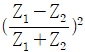
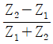
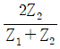
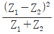
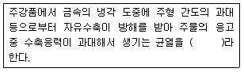
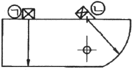
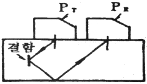
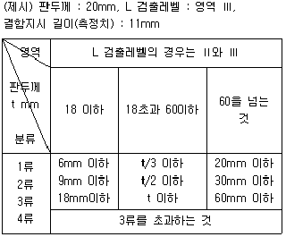
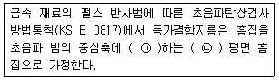

초음파비파괴검사기사 (2019-03-03 기출문제)
1과목: 비파괴검사 개론
1. 시험체에 있는 도체에 전류가 흐르도록 한 후, 시험체중의 전위분포를 계측하는 비파괴검사방법은?
- 전기저항법
- 화학분석 검사법
- 방사선투과 검사법
- 음파-초음파 검사법
(정답률: 73%)

2. 다음은 와전류탐상시험에서 표피효과의 기준이 되는 침투깊이에 대해 기술한 것이다. 올바른 것은?
- 시험체의 투자율이 낮을수록 침투깊이는 얕다.
- 시험체의 도전율이 높을수록 침투깊이는 깊다.
- 시험주파수가 낮을수록 침투깊이는 얕다.
- 탄소강과 알루미늄 중 탄소강이 침투깊이가 얕다.
(정답률: 52%)
3. 자분 분산매가 가져야 할 특성에 대한 설명 중 옳은 것은?
- 휘발성이 크고, 점도는 낮아야 한다.
- 점도가 낮고, 장기간 변질이 없어야 한다.
- 인화점이 낮고, 인체에 유해하지 않아야 한다.
- 적심성은 나쁘며, 결함에서 활발한 화학반응이 일어나야 한다.
(정답률: 65%)
4. X선투과시험과 비교한 γ선 투과시험의 장점에 대한 설명으로 틀린 것은?
- 운반하기 쉽고, 협소한 장소에 접근하기 쉽다.
- 동일한 에너지 범위일 경우 X선 장비보다 가격이 저렴하다.
- γ선은 동위원소의 핵에서 방출되는 전자파이므로 외부전원이 필요치 않다.
- 에너지가 높으므로 두꺼운 검사체에 사용할 수 있고, 선명한 투과사진을 얻을 수 있다.
(정답률: 60%)
5. 1cm 직경의 구리 봉을 2cm 직경의 코일로 검사하는 경우의 충전의 충전(진)율은?
- 0.25 (25%)
- 0.5% (50%)
- 2.0 (200%)
- 4.0 (400%)
(정답률: 58%)
6. 2원계 상태도에서 포정 반응으로 옳은 것은?
- (액상)→(고상A)+(고상B)
- (액상A)+(액상B)→(고상)
- (고상A)→(고상B)+(고상C)
- (고상A)+(액상)→(고상B)
(정답률: 56%)
7. 고강도 알루미늄 합금인 두랄루민의 주요 구성 원소는?
- Al-Cu-Mn-Mg
- Al-Ni-Co-Mg
- Al-Ca-Si-Mg
- Al-Zn-Si-Mg
(정답률: 76%)
8. 피로한도에 대한 설명으로 옳은 것은?
- 지름이 크면 피로한도는 커진다.
- 노치가 있는 시험편의 피로한도는 크다.
- 표면이 거친 것이 고운 것보다 피로한도가 작다.
- 산, 알칼리, 물에서 부시된 시험편의 피로한도는 부식 전보다 크다.
(정답률: 57%)
9. 탄소의 함량이 가장 낮은 것에서 높은 순서로 나열한 것은? (단, 오른쪽으로 갈수록 탄소의 함량이 높다.)
- 전해철＜연강＜주철＜경강
- 전해철＜연강＜경강＜주철
- 연강＜전해철＜경강＜주철
- 연강＜전해철＜주철＜경강
(정답률: 68%)
10. 로크웰경도시험의 시험하중에 해당되지 않는 것은?
- 588.4N
- 980.7N
- 1471N
- 1962N
(정답률: 62%)
11. Cu-Zn계 상태도에서 α상의 격자구조는?
- 조밀육방격자
- 체심입방격자
- 사방조밀격자
- 면심입방격자
(정답률: 59%)
12. 다음 중 쾌삭강에서 쾌삭성을 향상시키는 원소와 가장 거리가 먼 것은?
- S
- Se
- Cr
- Pb
(정답률: 50%)
13. 실루민은 어느 계통의 합금인가?
- Al-Si계 합금
- Fe-Si계 합금
- Cu-Si계 합금
- Ti-Si계 합금
(정답률: 75%)
14. 은백색을 띠며 비중이 1.74로 실용금속 중 가장 가볍고 HCP 격자구조를 가지는 금속은?
- Cd
- Cu
- Mg
- Zn
(정답률: 77%)
15. 비금속 개재물 검사 분류 항목 중 그룹 B에 해당하는 것은?
- 황화물 종류
- 규산염 종류
- 단일 구형 종류
- 알루민산염 종류
(정답률: 51%)
16. 탄소강의 피복 아크 용접에서 기공 발생의 원인이 아닌 것은?
- 용접 분위기 내 수소의 과잉
- 충분히 건조한 저수소계의 용접봉 사용
- 모재에 유황 함유량 과대와 용접부의 급랭
- 과대 전류를 사용하고 용접속도가 빠를 때
(정답률: 72%)
17. 일반적인 플럭스 코어드 아크 용접의 특징으로 옳은 것은?
- 비드 외관이 거칠다.
- 양호한 용착금속을 얻을 수 있다.
- 아크가 불안정하고 스패터가 많다.
- 용제에 탈산제, 아크 안정제 등이 포함되어 있지 않다.
(정답률: 63%)
18. 다음 중 연납 땜과 경납 땜을 구분하는 온도는?
- 350℃
- 400℃
- 450℃
- 500℃
(정답률: 65%)
19. 피복 아크 용접시 발생되는 보호 가스의 성분 중 가장 많이 발생하는 가스는?
- CO
- CO2
- H2
- H2O
(정답률: 55%)
20. 아크 용접에서 용접일열 30000J/cm, 용접전압이 40V, 용접전류 125A일 때 용접속도는 몇 cm/min인가?
- 10
- 20
- 30
- 40
(정답률: 50%)
2과목: 초음파탐상검사 원리
21. 직접접촉 수직탐촉자의 두께 측정방법이 아닌 것은?
- 일탐법
- 다중에코법
- 분할형탐촉자
- 속도교정
(정답률: 32%)
22. 수직탐상에서 결함이 근거리 음장 내에 있는 경우, 결함의 최대 에코높이가 얻어진 위치는 결함이 빔 중심에 위치하지 않는 경우도 있다. 이 경우의 대책으로 옳은 것은?
- 주파수를 높여 원거리음장에 있도록 한다.
- 진동자의 직경을 작은 것으로 하여 원거리음장에 있도록 한다.
- 진동자의 직경을 큰 것으로 하여 원거리음장에 있도록 한다.
- 근거리음장에서의 탐상은 정확히 검출할 수 있으므로 빔중심에 위치하지 않는 경우는 없다.
(정답률: 60%)
23. 초음파 두께 측정에 있어서 오차가 발생할 경우의 설명으로 가장 거리가 먼 것은?
- 음파의 진행속도가 시험하는 금속에 정해진 상수값에 비해 편차가 클 때
- 보정용 탐촉자와 측정용 탐촉자가 서로 다를 때
- 보정시의 접촉매질과 측정 시의 접촉매질이 서로 다를 때
- 보정용 대비시편과 검사체의 재질이 서로 다를 때
(정답률: 66%)
24. 직경 12mm, 2.5MHz인 탐촉자의 음속이 6km/s인 재질내에서 이 탐촉자의 근거리 음장은?
- 15.0mm
- 1.5mm
- 12.5mm
- 1.25mm
(정답률: 47%)
25. 알루미늄과 물의 경계면에서 초음파의 반사각은?
- 입사각의 2배이다.
- 입사각의 4배에 가깝다.
- 입사각과 같다.
- 입사각의 1/2에 가깝다.
(정답률: 72%)
26. 종파(Longitudinal Wave)에 대한 설명으로 틀린 것은?
- 압축파 또는 L파이다.
- 입자의 진동양식이 파의 진행 방향과 평행하다.
- 액체나 기체에서는 전파하지 못한다.
- 횡파속도의 약 2배이다.
(정답률: 71%)
27. 탄소강(음향 임피던스 Z1)의 한 쪽에 스테인리스강(음향임피던스 Z2)을 클래딩(cladding)하였다. 탄소강측으로부터 2MHz로 수직탐상했을 때 경계면에서의 음압반사율은?




(정답률: 75%)
28. 결정립에 대한 초음파의 산란감쇠에서 파장(λ)와 결정입자(Ds)의 비가 λ/Ds≒1일 때의 산란은?
- Rayleigh 산란
- Stochastic 산란
- 확산 산란
- 회절 산란
(정답률: 54%)
29. 결함의 크기를 측정하는 방법 중 기준선(Threshold Value)법과 dB drop법을 비교하였을 때 장단점으로 틀린 것은?
- dB drop법은 전이손실이나 감쇠의 영향을 크게 받지 않는다.
- dB drop법은 탐상자의 개인차로 짧은 결함이 길게 나타날 수 있다.
- Threshold Value법은 에코높이의 영향을 받지 않는다.
- Threshold Value법은 Reference Level로 피로에 의한 오류가 적다.
(정답률: 57%)
30. 경사각탐상용 감도 조정 시험편으로는 STB-A2와 RB-4가 사용된다. STB-A2와 비교하여 RB-4의 특징이 아닌 것은?
- 후판에 적용된다.
- 표면파의 방해가 없다.
- 사각탐상 이외에는 사용할 수 없다.
- 경험이 적은 검사원도 용이하게 탐상할 수 있다.
(정답률: 59%)
31. 결함으로부터 최대에코를 검출한 후 최대에코의 높이가 좌우로 50% 낮아지는 탐촉자의 이동거리를 결함 길이로 평가하는 방법은?
- 6dB drop method
- DAC드롭법(DAC drop)
- 최대진폭법(Maximum Amplitude drop)
- 비교측정법(Reference Method)
(정답률: 71%)
32. 수직탐촉자를 사용할 경우 원거리 음장에서 빔 분산이 가장 적은 탐촉자는?
- 1.0 MHz - 직경 3/8인치 진동자
- 5.0 MHz - 직경 1인치 진동자
- 2.25 MHz - 직경 1인치 진동자
- 5.0 MHz - 직경 3/8인치 진동자
(정답률: 70%)
33. 동일 탐촉자로 표면에서 일정한 거리에 있는 3개의 결함을 탐상하니 초음파 탐상기의 CRT스크린 상에 각각 80% FSH(Full Screen Height), 50% FSH, 20% FSH 였다. 이 결함들의 면적비는? (단, 비례는 80% : 50% : 20% FSH 순 이다.)
- 1.8 : 1.5 : 1.2
- 4.5 : 3.6 : 2.2
- 8 : 5 : 2
- 5 : 3 : 1
(정답률: 77%)
34. 초음파탐상검사에서 큰 결함영역의 크기를 측정하는 경우의 옳은 설명은?
- dB drop법은 자동탐상에 이용하기 쉽다.
- dB drop법은 전달손실의 영향을 받기 쉽다.
- dB drop법은 감쇠의 영향을 받기 쉽다.
- dB drop법은 결함 에코높이의 영향을 받기 쉽다.
(정답률: 59%)
35. 다음 ()안에 알맞은 말은?

- 수축공
- 열간균열
- 냉간균열
- 용융불량
(정답률: 69%)
36. 동일한 두께의 2개 강판을 수직 탐상하였다. 하나는 저면반사가 많이 나타났지만 다른 하나는 몇 회만 나타났다. 다음 중 저면 에코가 적게 나타난 재료로 옳은 것은?
- 음속이 느린 재료
- 결정립이 작은 재료
- 감쇠가 큰 재료
- 라미네이션이 있는 재료
(정답률: 64%)
37. 초음파가 다른 매질의 경계에 어떤 각도로 입사할 때 제 2매질 내 음파의 진행방향을 정하는 굴절각은 무엇에 의해서 결정되는가?
- 초음파의 진동수
- 초음파의 파장
- 초음파의 강도
- 초음파의 음속
(정답률: 54%)
38. 초음파탐상검사에서 표면파로 검출할 수 있는 결함의 위치는?
- 표면 밑 1파장 정도의 깊이
- 표면 밑 3파장 정도의 깊이
- 표면 밑 5파장 정도의 깊이
- 표면 밑 7파장 정도의 깊이
(정답률: 80%)
39. 근거리 음장에서 신호의 진폭에 변화를 일으키는 이유는?
- 파의 간섭
- 탐촉자의 내부 감쇠성질
- 접촉매질에서 생기는 부적당한 연결
- 진동자와 검사체와의 간섭
(정답률: 54%)
40. 초음파탐상검사 시 원거리음장에서 빔분산각에 영향을 주는 주된 인자는?
- 탐상방법
- 탐촉자의 밀착성
- 주파수 및 진동자의 크기
- 펄스의 길이 및 세기
(정답률: 75%)
3과목: 초음파탐상검사 시험
41. 탐촉자의 진동자 크기보다 작거나 동일한 크기의 기공과 융합불량이 같은 거리에 있다면 일반적으로 스크린상의 에코 높이는 어떻게 표시되는가? (단, 음파는 결함에 수직방향으로 입사된다.)
- 기공의 에코가 융합불량 에코보다 높다.
- 융합불량의 에코가 기공 에코보다 높다.
- 기공 에코와 융합불량 에코가 똑같이 나타난다.
- 융합불량 에코는 나타나지만 기공 에코는 나타나지 않는다.
(정답률: 70%)
42. 초음파 탐상검사에서 탐상방향을 선정하는 경우 기본적으로 고려해야할 사항으로 틀린 것은?(오류 신고가 접수된 문제입니다. 반드시 정답과 해설을 확인하시기 바랍니다.)
- 발생이 우려되는 결함의 위치 및 방향을 예측한다.
- 결함에 초음파가 반사되는 면이 수직이 되는 면을 탐상면으로 한다.
- 검사 대상 부위 전체가 포함되도록 주사범위를 결정한다.
- 횡파사각 탐촉자를 사용하는 경우 굴절각이 40°이상 70° 이하의 범위에서 결함을 수직에 가까운 방향으로부터 겨냥할 수 있는 굴절각을 선정한다.
(정답률: 38%)
43. 2진동자 탐촉자에 관한 설명으로 옳은 것은?
- 진동자가 송신용과 수신용 2개로 분리되어 있기 때문에 불감대가 길다.
- 2개 진동자의 빔 각도가 경사져 있기 때문에 특정의 탐상영역(교축점 부근)이외에서는 결함의 검출감도가 낮게 된다.
- 탐상면에 수직한 결함의 검출에 가장 적합하다.
- 저면에코 높이를 결함에코 높이의 평가기준으로 사용한다.
(정답률: 37%)
44. 매질 1에서 입사각이 15°로 초음파가 경사입사할 때 매질 2에서의 굴절각은 얼마인가? (단, 매질 1의 음향임피던스는 6kg/m2s, 밀도는 3g/cm3, 매질 2의 음향임피던스는 8kg/m2s, 밀도는 4g/cm3이다.)
- 14°
- 15°
- 16°
- 17°
(정답률: 63%)
45. 초음파 탐상검사에서 결함의 크기를 측정할 때 정확성을 기하기 위해 고려하여야 할 사항으로 틀린 것은?
- 결함의 특성
- 시험체의 곡률
- 시험체의 용도
- 탐촉자 접근 한계성
(정답률: 86%)
46. 초음파탐상기의 중요한 3가지 기본 성능으로 옳은 것은?
- 증폭의 직선성, 빔, 폭, 최대감도
- 증폭의 직선성, 분해능, 시간축의 직선성
- 증폭의 직선성, 분해능, 집속범위
- 주파수, 굴절각, 불감대
(정답률: 68%)
47. 같은 크기의 결함이 시험체내에 있는 경우 초음파탐상시험으로 가장 발견되기 쉬운 결함은?
- 구형의 결함
- 다른 원소의 개재물
- 초음파의 진행 방향에 평행으로 있는 결함
- 초음파의 진행 방향에 직각으로 넓게 있는 결함
(정답률: 72%)
48. 시험체를 탐촉자 5Z20N을 사용하여 초음파검사를 하였더니 임상에코가 많이 나타나서 검사가 불가능하였다. 검사를 진행하기 위하여 교체하기에 가장 적절한 탐촉자는?
- 10Q10N
- 5Q20N
- 2Z20N
- 5Z10N
(정답률: 67%)
49. 강 용접부 내부 융합부에 존재하는 불연속을 검출하는데 가장 일반적인 초음파탐상검사는?
- 판파를 이용한 수침법으로 시험
- 판파를 이용한 수직접촉법으로 시험
- 횡파를 이용한 전목수침법으로 시험
- 횡파를 이용한 경사각탐상법으로 시험
(정답률: 80%)
50. 아래 그림에 나타낸 STB-A3 시험편의 ㉠위치와 ㉡위치의 측정한 치수(mm)를 순서대로 나타낸 것은?

- 35, 40
- 45.5, 50
- 48, 65.5
- 100, 100
(정답률: 75%)
51. 펄스반사식 초음파탐상법에서 평판 맞대기 용접부 내부에 원형 기공이 1개 존재한다면 경사각탐촉자의 주사방법에 따른 에코의 변화로 옳은 것은?
- 전자주사 시 에코의 높이가 거의 변하지 않는다.
- 목돌림주사 시 에코의 높이가 거의 변하지 않는다.
- 전후조사 시 에코의 높이가 거의 변하지 않는다.
- 좌우주사 시 에코의 높이가 거의 변하지 않는다.
(정답률: 46%)
52. 탐촉자 2개로 송ㆍ수신(Pitch-catch)하여 결함을 탐상하는 방법으로 아래 그림과 같이 탐촉자를 배열하여 검사하는 방법은?

- 탠덤탐상법
- V반사탐상법
- K반사탐상법
- 표면파탐상법
(정답률: 68%)
53. 수침 공진법을 이용하여 초음파탐상검사를 할 때 설명으로 옳은 것은?
- 시편의 공진을 감지하여 두께를 결정한다.
- 수중 진로의 공진 진폭 변화를 감지하여 두께를 결정한다.
- 시편을 통과한 공진 초음파의 감쇠현상을 감지하여 두께를 결정한다.
- 수중 진로의 음향 임피던스 변화를 감지하여 두께를 결정한다.
(정답률: 24%)
54. 수침법에서 초음파가 14°의 각도로 강재에 입사되었다면 강재 내에서 횡파의 굴절각은? (단, 강의 횡파속도는 3200m/sec이고 물의 횡파속도는 1500m/sec이다.)
- 2.5°
- 1.5°
- 6.5°
- 8.5°
(정답률: 45%)
55. X형 개선의 용접부에 발생하는 결함 중 내부용입불량은 방향성 때문에 검출하기 어려운 결함으로 검출하기에 가장 적절한 방법은?
- 수침법
- 탠덤탐상법
- 표면파법
- 정사각탐상법
(정답률: 74%)
56. 경사각탐상을 할 때 용접 덧붙임을 제거한 상태에서 용접부의 가로터짐(횡균열) 등의 결함을 검출하기 위하여 용접부 및 열 영향부 위에 놓고 초음파 빔을 용접선 방향으로 돌려 용접선 방향으로 이동시키는 주사법은?
- 경사평행주사
- 탠덤 주사
- 진자 주사
- 목돌림 주사
(정답률: 59%)
57. 초음파탐상검사를 할 때 시험주차수를 선정할 때 고려사항으로 옳은 것은?
- 주파수를 낮추는 것이 결함검출 능력을 높이는데 유효하다.
- 결정립이 조대한 재료를 검사할 경우 높은 주파수를 선택한다.
- 면 모양의 결함탐상 시 필요 이상으로 높은 수파수의 적용은 피하는 것이 좋다.
- 결함의 위치결정의 정밀도를 높이기 위해 낮은 주파수를 사용한다.
(정답률: 64%)
58. STB-A1 표준시험편으로 초음파 탐촉자의 굴절각을 측정한 결과 45°이었다. 이 탐촉자로 알루미늄에 대한 굴절각을 측정하면 약 얼마인가?
- 43°
- 45°
- 48°
- 50°
(정답률: 72%)
59. 재질이 다른 동일 두께의 판재 2장을 각각 수직탐상 하였다. 전자는 저면 에코의 반사 횟수가 매우 많은데 비해 후자는 몇 회 정도만 보였다. 후자와 같은 재료는 어느 것에 해당되는가?
- 감쇠가 큰 재료이다.
- 결정입자가 미세한 재료이다.
- 전자는 주강품이고, 후자는 단강품이다.
- 전자는 결함이 존재하나 후자는 결함이 존재하지 않는다.
(정답률: 62%)
60. 표준시험편인 STB-A1의 용도를 설명한 것으로 틀린 것은?
- 경사각탐촉자의 측정범위의 조정
- 경사각탐촉자의 입사점 측정
- 경사각탐촉자의 굴절각 측정
- 경사각탐촉자의 원거리 분해능 측정
(정답률: 75%)
4과목: 초음파탐상검사 규격
61. 보일러 및 압력용기에 대한 표준초음파탐상검사(ASME Sec.V, Art.23 SB-548)에서 권장하는 탐촉자에 대한 설명과 가장 거리가 먼 것은?
- 평면 비집속형이다.
- 정격주파수에서 종파를 발신하고 수신하는 압전수정을 내장한 것이다.
- 초기 주사에 사용하는 탐촉자 내의 수정 또는 수정 집합체의 총 유효면적은 2.5cm2이하여야 한다.
- 불연속부 치수를 평가하기 위해 사용하는 원형 탐촉자의 유효지름은 19mm를 초과하지 않아야 한다.
(정답률: 40%)
62. 강 용접부의 초음파 탐상 시험방법(KS B 0896)에서 탐촉자의 이동 거리에 추정한 흠의 겉보기 길이를 나타내는 것은?
- 경함의 공칭 길이
- 접촉자 흡 거리
- 흠의 지시 길이
- DAC 흠 길이
(정답률: 64%)
63. 강 용접부의 초음파 탐상 시험방법(KS B 0896)에 따른 다음 표를 이용하여 제시된 결함지시 등급은?

- 1류
- 2류
- 3류
- 4류
(정답률: 80%)
64. 아크용접 강관의 초음파탐상검사 방법(KS D 0252)에서 자동참상에 의한 탐상방법의 설명으로 틀린 것은?
- 접촉매질은 통상 물로 한다.
- 탐상은 원칙적으로 용접선의 양쪽에서 한다.
- 탐상은 수침법 또는 직접 접촉법으로 한다.
- 탐촉자와 용접부의 거리는 통상 5스킵 이상으로 한다.
(정답률: 72%)
65. 강 용접부의 초음파 탐상 시험방법(KS B 0896)에서 접촉자 흠 거리가 나타내는 의미는?
- 경사각 탐촉자의 입사점에서 흠까지의 탐상면 위에서의 거리
- 경사각 탐촉자의 입사점에서 흠까지의 탐상면 우측에서의 거리
- 경사각 탐촉자의 입사점에서 흠까지의 탐상면 좌측에서의 거리
- 경사각 탐촉자의 입사점에서 흠까지 초음파가 시험체 내를 진행한 거리
(정답률: 56%)
66. 보일러 및 압력용기에 대한 표준초음파탐상검사(ASME Sec.V, Art.4)에서 아날로그 장치의 직선성 점검은 얼마의 기간을 초과하지 않는 범위에서 하여야 하는가?
- 2주일
- 3개월
- 1년
- 3년
(정답률: 70%)
67. 보일러 및 압력용기에 대한 표준초음파탐상검사(ASME Sec.V, Art.4)에 의한 용접부 탐상 시 교정 확인 중 감도 설정이 그 진폭의 2dB 또는 몇 % 이상 변할 때 감도를 수정하고 재시험을 해야 하는가?
- 10%
- 20%
- 15%
- 25%
(정답률: 48%)
68. 강 용접부의 초음파 탐상 시험방법(KS B 0896)에 따른 음향 이방성 검정을 위한 횡파 음속비 측정에 사용할 수 있는 탐촉자는?
- 횡파 전자 초음파 탐촉자
- 45°경사각 탐촉자
- 60°경사각 탐촉자
- 70°경사각 탐촉자
(정답률: 67%)
69. 압력용기용 강판의 초읍파 탐상검사(KS D 0233)에서 수직법에 의한 펄스반사법으로 탐상하고자 할 때 단일 진동자 수직 탐촉자로 검사할 대상이 아닌 강판의 두께는?
- 10mm
- 20mm
- 30mm
- 60mm
(정답률: 64%)
70. 압력용기 제작기준 규격 강제 부록(ASME Code Sev.Ⅷ Div.1 App.12)에 따라 초음파탐상 결과를 판정하고자 할 때 결함의 길이에 관계없이 불합격 처리되는 결함은?
- 융합불량
- 기공
- 슬래그
- 블로우홀
(정답률: 71%)
71. 보일러 및 압력용기에 대한 표준초음파탐상검사(ASME Sec.V, Art.23 SB-548)에 따른 표준방법 중 진동자 수정체의 실제 지름이 10mm일 때 주사 간격(mm)은?
- 12
- 17
- 22
- 27
(정답률: 36%)
72. 탄소강 및 저합금강 단강품의 초음파탐상시험방법(KS D 0248)에 따른 탐상방식에 관한 설명으로 옳지 않은 것은?
- 흠의 평가를 흠 에코 높이로 평가하는 경우, 밑면 에코 방식으로 탐상하였다.
- 흠의 평가를 흠 에코 높이로 평가하는 경우, 시험편 방식으로 탐상하였다.
- 흠의 평가를 밑면 에코의 저하량으로 평가하는 경우, 밑면 에코 방식으로 탐상하였다.
- 흠의 평가를 밑면 에코의 저하량으로 평가하는 경우, 시험편 방식으로 탐상하였다.
(정답률: 49%)
73. 아크용접 강관의 초음파탐상검사 방법(KS D 0252)에서 각 흠 N-10 및 N-12.5 호칭방법에 대한 설명으로 옳은 것은?
- 두께 10mm 이하의 강관에는 적용하지 않는다.
- 두께 12mm 이하의 강관에는 적용하지 않는다.
- 나비는 1.5mm 이하로 한다.
- 두께 15mm 이하의 강관에 적용하지 않는다.
(정답률: 40%)
74. 보일러 및 압력용기에 대한 표준초음파탐상검사(ASME Sec.V, Art.4)에 따른 탐상장비의 요건에 대한 설명으로 옳은 것은?
- 장비는 적어도 6~15MHz 사이의 주파수에서 작동할 수 있어야 한다.
- 장비는 2.0dB 이하의 단계로 조절할 수 있는 게인 조절기를 갖추어야 한다.
- 장비가 댐핑조절기를 갖추고 있다면 검사감도의 저하 시 댐핑조절기를 사용한다.
- 리젝트 조절기는 검사의 선형성에 영향을 주므로 항상 "on"위치에 놓아야 한다.
(정답률: 71%)
75. 초음파 탐상시험용 표준시험편(kS B 0831)에 의해 A3형계 STB 표준시험편으로 점검할 때 합격여부 판정 기준에 포함되지 않는 것은?
- 굴절각 눈금
- 입사점 측정위치
- R 100면의 에코 높이
- ø4×4mm 구멍의 에코 높이
(정답률: 53%)
76. 초음파 펄스 반사법에 의한 두께 측정방법(KS B ⑤36)에 다른 다점측정법에서 하나의 측정점을 기준으로 할 때 원의 지름은 얼마인가?
- 30mm
- 40mm
- 50mm
- 60mm
(정답률: 36%)
77. 금속재료의 펄스반사법에 따른 초음파탐상 시험방법 통칙(KS B 0817)에서 탐상도형의 기본 기호에 대한 내용으로 틀린 것은?
- T : 송신펄스
- S : 표면에코
- B : 흠집에코
- W : 측면에코
(정답률: 67%)
78. 보일러 및 압력용기에 대한 표준초음파탐상검사(ASME Sec.V, Art.5)에 따른 교정시험편의 요건을 설명한 것으로 옳은 것은?
- 주조품 교정시험편은 검사할 주조품 두께의 ±15% 이어야 한다.
- 볼트용 재료 교정시험편은 경사각빔 검사에 사용되어야 한다.
- 볼트용 재료 교정시험편은 볼트, 스터드 볼트 등의 재료에 사용할 수 있다.
- 관제품 교정시험편의 교정 반사체는 횡방향(길이방향) 노치이어야 한다.
(정답률: 49%)
79. 다음 중 ()안에 들어갈 용어가 적절히 나열된 것은?

- ㉠ 평행 ㉡ 원형
- ㉠ 직교 ㉡ 원형
- ㉠ 평행 ㉡ 장방형
- ㉠ 직교 ㉡ 장방형
(정답률: 70%)
80. 보일러 및 압력용기에 대한 표준초음파탐상검사(ASME Sec.V, Art.23 SB-548)에서 알루미늄 합금판을 수침법으로 검사할 때 탐촉자와 시험체 사이의 거리허용변동 범위는?
- ±25.4mm
- ±8.5mm
- ±6.4mm
- ±3.2mm
(정답률: 50%)